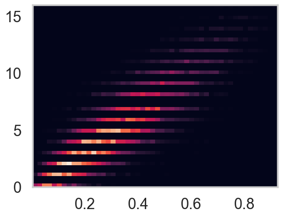

%matplotlib inline
import numpy as np
from scipy import stats
from scipy.stats import norm, gamma
from scipy.stats import distributions
import matplotlib.pyplot as plt
import seaborn as sns
import time
sns.set_style('whitegrid')
sns.set_context('poster')Gibbs Sampling with Conjugate Conditionals
Exploiting conjugate prior pairs for efficient Gibbs sampling.
mcmc
sampling
bayesian
Demonstrates Gibbs sampling that exploits conjugate prior pairs like Beta-Binomial. Shows how conditional posteriors simplify to known distributions, making each Gibbs step a direct sample from a standard distribution.
We now going to take a look at a slightly more complicated case that was originally outlined in full generality by Casella and George (1992). Suppose we have a nasty looking joint distribution given as:
\[p(x,y) = \binom{16}{y} x^{y+1} (1-x)^{19-y}\]
Looks like a binomial
For such a situation the two conditional distributions are not exactly obvious. Clearly we have a binomial term staring at us, so we should be looking to try and express part of the function as a binomial of the form,
\[p(\theta \vert \pi ) = \binom{n}{\theta} \pi^{\theta} (1-\pi)^{n-\theta}\]
It follows directly that for our example we have a binomial with \(n=16\) and \(\theta =y\),
\[p( y \vert x ) = g(x) \binom{16}{y} x^{y+1} (1-x)^{16-y} .\]
The $ xy$ conditional
So, now we need the conditional for x|y, and we know from Bayes’ theorem that :
\[p(x \vert y) = \frac{p(y \vert x)p(x)}{p(y)} \]
so what we should be looking for is a conjugate prior to a Binomial distribution, which is of course a Beta distibution:
\[Beta(\alpha,\beta) = x^{\alpha-1}(1-x)^{\beta-1}\]
With this intuition in mind, the math is now trivial:
\[p(x \vert y) = h(y) x^{\alpha + y - 1}(1-x)^{\beta + n - y -1}\]
which for our example question is simply:
\[p(x \vert y) \sim Beta(y+\alpha,n-y+\beta)\]
with \(\alpha=2\) and \(\beta=4\).
The sampler
With our conditionals formulated, we can move directly to our Gibbs sampler.
from scipy.stats import binom, beta
n=16
alph=2.
bet=4.
def gibbs(N=10000,thin=50):
x=1
y=1
samples=np.zeros((N,2))
for i in range(N):
for j in range(thin):
y=binom.rvs(n,x)
newalph=y+alph
newbet=n-y+bet
x=beta.rvs(newalph, newbet)
samples[i,0]=x
samples[i,1]=y
return samplesout=gibbs()
plt.hist2d(out[:,0],out[:,1], density=True, bins=50)
plt.show()